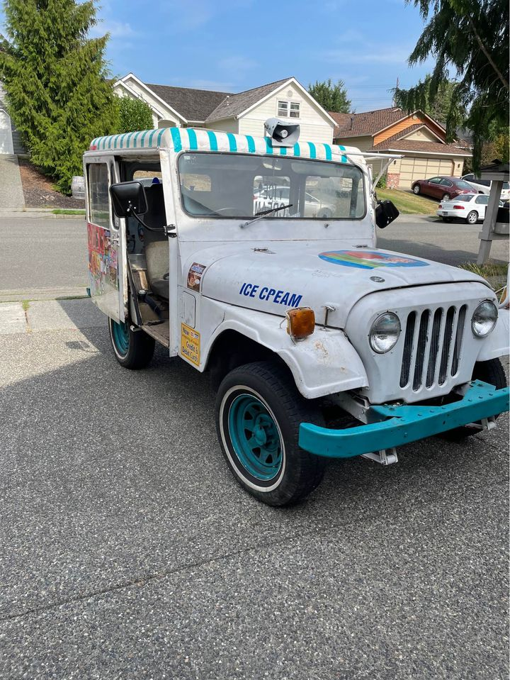

Project 1 - What Do I Know?
About
I am affectionately known in my family as the “Fix-It Guy”. When I was 8 years old, I repaired my family’s DVD player. No one could get it to work, and I was curious, so I played around with it until something dislodged from the drive and it started to work again. I didn’t expertly diagnose and restore complicated electrical components, but I did fix something no one else could. Out of everything that has happened in my life so far, I specifically remember this tangible moment. It was rewarding and gratifying to me to improve everyday life for me and my family.
I have always enjoyed creating something from something else. Being curious, loving to learn how things work and having a healthy imagination have propelled me forward in life. From turning household gadgets into make-believe spy devices to teaching myself how to build computers and converting a vintage postal Jeep into an ice cream truck business, I have grown from hands-on experiences.


In fourth grade I started learning block-based coding. While I struggled with it, coding enabled me to create small games, fueling a passion for the unknown. My enthusiasm for coding spiraled into creating Minecraft mods, allowing me to create new experiences for myself and my friends.
I also started to help around the house. Although I didn’t always have a choice, I enjoyed helping with projects. What began as replacing a simple lightbulb, my projects evolved overtime in complexity and size. I went from cleaning gutters to replacing car oil, woodworking, power spraying, assembling appliances, to diagnosing and fixing problems. Over every project, I started to understand how different equipment and systems worked and how they all interact on some level. I also had to be creative with solving problems and making whatever I had work for the job.
I also wanted to continue to learn about what I didn’t understand. I found my solutions in the internet. While my friends watched funny videos on YouTube, I found myself crazed with educational technology-specific videos. YouTube became a significant aspect of my learning; I watched how-to videos and explored a world of different technologies in my downtime. I started to apply what I was learning to my life.
I designed and built my first desktop computer with what I had discovered online. I learned from that experience and sold my first computer to fund construction of a second, more sophisticated computer. Out of curiosity and the goal to have better performance, I decided to challenge myself and water cool my second computer. While this added risk and complexity, it allowed for better performance and was more fun. That whole process was notably rewarding as I designed and built my own system that I continue to use today. When my mom’s all-in-one desktop died, instead of throwing the e-waste away, I disassembled it and salvaged its usable parts to create a second monitor for my desktop. Using my creativity, I was able to create something new out of something old.
I started my ice cream truck business because I wanted a summer job that would engage my interests and lead me down an entrepreneurial path. I investigated cars with a friend and together we purchased a vintage 1974 postal jeep. I researched permits with the City of Seattle to ensure we would be following the law. Upgrading safety, engine performance, electrical efficiency, and finding compelling ice cream music (that I could listen to all day) were all ways I improved an old system. Studying basic business principles like supply and demand were also rewarding experiences.
My imagination and curiosity have shaped my life. Technology is complex and complicated, but all it is, is simple basic processes stacked together to add up to something collectively greater and complex. I like to view my life in the same way: assembling simple parts to create something bigger and better.
Contact
Email: jdenney@eastsideprep.org
Address:
- John Denney, Student
- Ice Cream Mashine
- 4517 W Dravus St.
- WA 98199
For serious inquires here is our presidents information:
- Joe Biden, President
- 1600 Pennsylvania Ave NW
- DC 20500
- joebiden@whitehouse.com
Please do not send me spam or junk email!